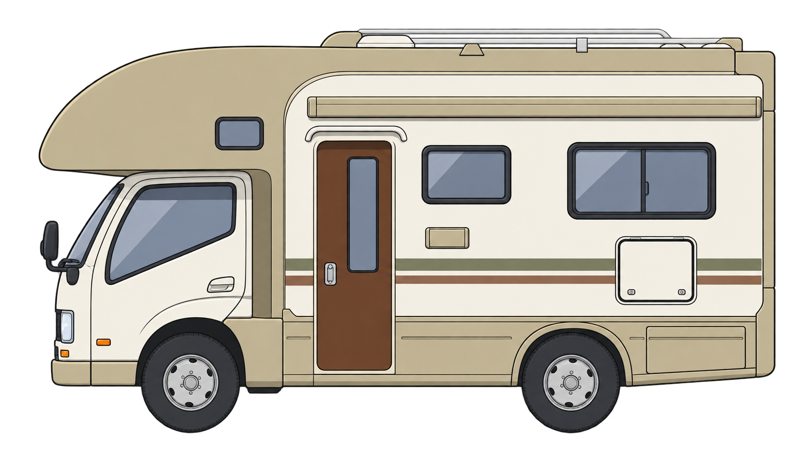
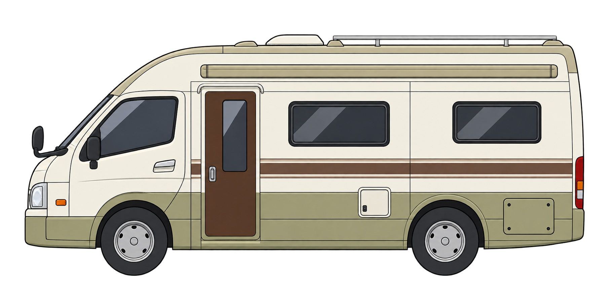
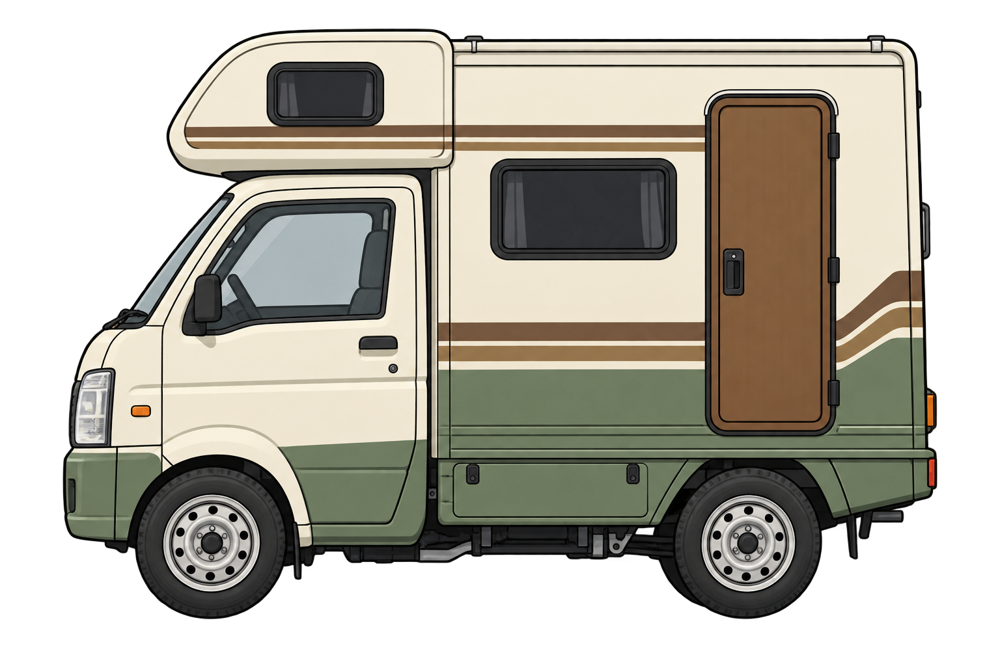
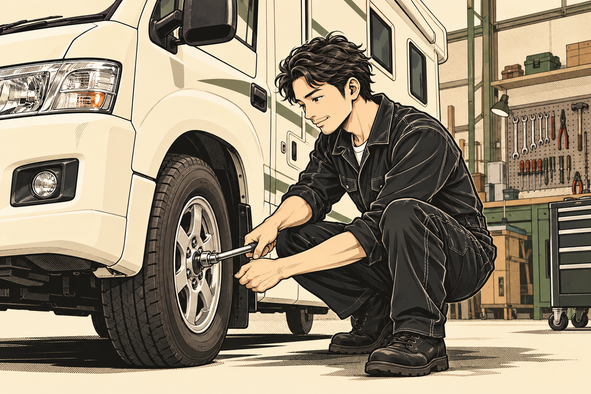
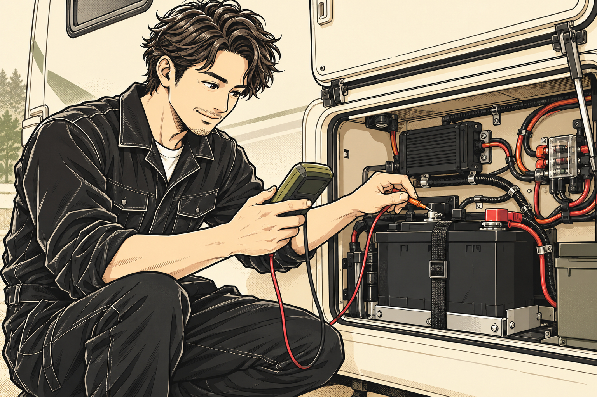
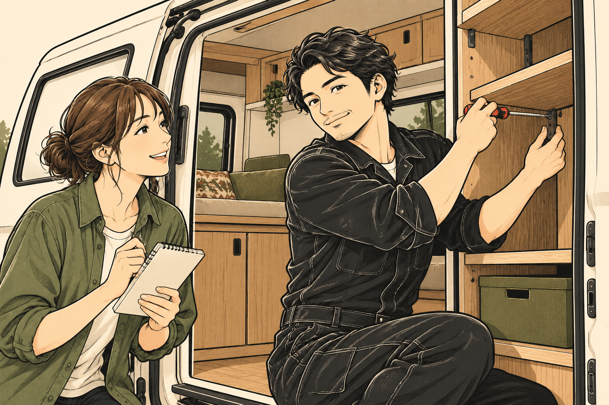
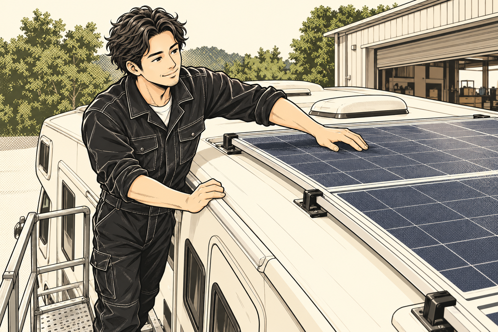
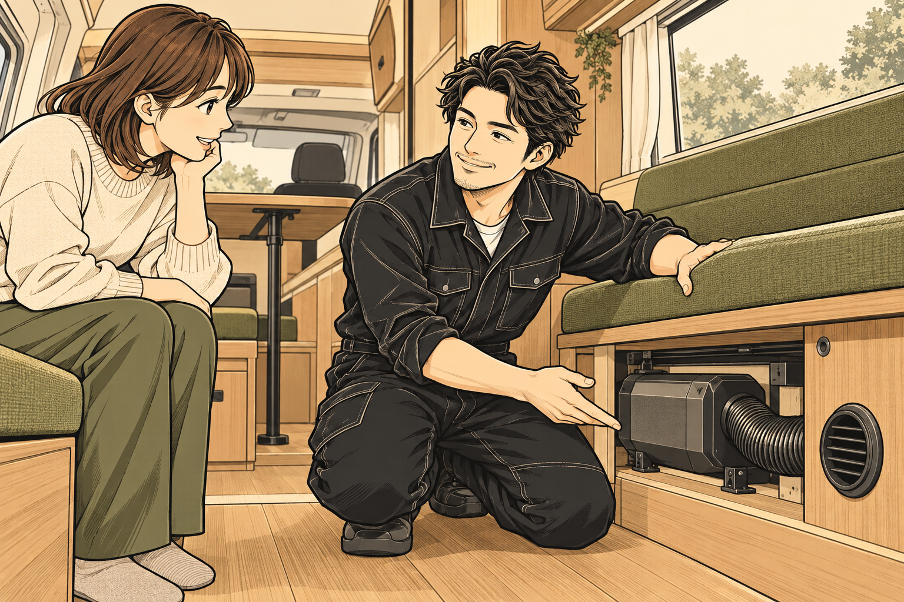
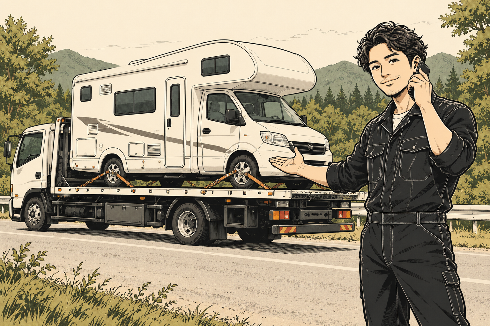

01
REPAIR & MAINTENANCE
修理・メンテナンス
不調を見つけて、次の旅へ。
電装の不調、足回りの異音、消耗品の確認。気になる症状から、旅行前の点検までご相談ください。
相談前に確認すること ＋
症状が出る場面、車種・年式、架装メーカーをお知らせください。車両の状態や部品の供給状況を確認し、対応内容をご案内します。
この内容をLINEで相談する ↗旅する愛車の、かかりつけ。
CAMPER REPAIR
& MAINTENANCE
直して、整えて。
また、旅に出よう。
 CHIBA / KIMITSU
CHIBA / KIMITSU


BEFORE YOUR NEXT TRIP
旅の前の、気がかり。走ること。車内で過ごすこと。
どちらも大切な、キャンピングカーだから。

走り・設備の不調 01 →旅先で電気、
バッテリー・充電 02 →ここがもっと
使い勝手・カスタム 05 →その気がかり、
RV BASE Labに
聞かせてください。
OUR SERVICES
整備で、旅をもっと自由に。キャンピングカーの修理から、車内設備のアップデートまで。
6つのサービスで、あなたの旅を支えます。
REPAIR & MAINTENANCE
電装の不調、足回りの異音、消耗品の確認。気になる症状から、旅行前の点検までご相談ください。
症状が出る場面、車種・年式、架装メーカーをお知らせください。車両の状態や部品の供給状況を確認し、対応内容をご案内します。
この内容をLINEで相談する ↗BATTERY & ELECTRICAL
リチウムバッテリーへの換装や電装設備の見直し。現在の設備と、旅先での使い方から考えます。
現在のバッテリー、充電器、インバーターなどの情報と、使いたい家電をお知らせください。設備の組み合わせを確認します。
この内容をLINEで相談する ↗SOLAR & CHARGING

ソーラーパネルの取付や充電システムの相談。車両と既存の設備に合わせて内容を確認します。
車種、ルーフの状態、既存のソーラー・充電設備が分かる情報をご用意ください。取付方法や対応範囲をご相談します。
この内容をLINEで相談する ↗FF HEATER

FFヒーターの取付や、お使いの設備についての相談。車中泊の過ごし方もお聞かせください。
現在お使いの製品名や型番、設置場所が分かる写真、ご希望をお知らせください。車両に合わせて対応を確認します。
この内容をLINEで相談する ↗PARTS & CUSTOM
購入したパーツの取付や、車内の使い勝手の見直し。希望する仕様や使い方からご相談いただけます。
部品のメーカー・型番・商品情報・付属品をお知らせください。車両との適合や取付可否を確認します。
この内容をLINEで相談する ↗RECOVERY & TRANSPORT

搬送が必要な場合は、車両と現在の状況をお電話でお知らせください。対応できる内容を確認します。
現在地、車種、車両サイズ、走行できるかどうかをお知らせください。対応の可否・費用・日程は状況を伺ってご案内します。
この内容をLINEで相談する ↗※漫画はサービスのイメージです。対応内容は車両・設備の状態を確認してご案内します。
03 / WHY RV BASE LAB?
キャンピングカービルダーで10年勤務したメカニックと、クルマの仕事に30年携わってきたパートナー。二人の経験を持ち寄り、愛車の「気になる」に向き合います。
04 / HOW IT WORKS
車種や症状が分かる写真があるとスムーズです。
すべて分からなくても構いません。
車種・年式・症状・ご希望を、LINEやお電話でお知らせください。
車両や設備の状況を伺い、必要に応じて来店日をご相談します。
確認できた内容をもとに、作業範囲・費用・日程をご相談します。
作業後は仕上がりや使い方を確認して、お引き渡しします。
費用・期間は、車両の状態・作業範囲・部品の準備状況によって異なります。
QUESTIONS & ANSWERS
よくいただくご質問をまとめました。
まずは車種・架装メーカー・年式と、ご希望の作業をお知らせください。車両の状態や部品の供給状況を含め、対応できる内容を確認します。
持込部品の取付をご相談いただけます。メーカー・型番・商品情報・付属品を事前にお知らせください。適合や取付可否を確認します。
車両の状態、作業内容、部品の準備、予約状況により異なります。ご希望の日程を伺い、作業範囲や費用を確認してご案内します。
ご来店前にお電話またはLINEでご相談ください。車両とご相談内容を事前に伺います。大型車の進入経路や駐車についてもご確認ください。
LET’S TALK ABOUT YOUR CAMPER
症状がうまく説明できなくても大丈夫。
まずは、分かるところからお聞かせください。